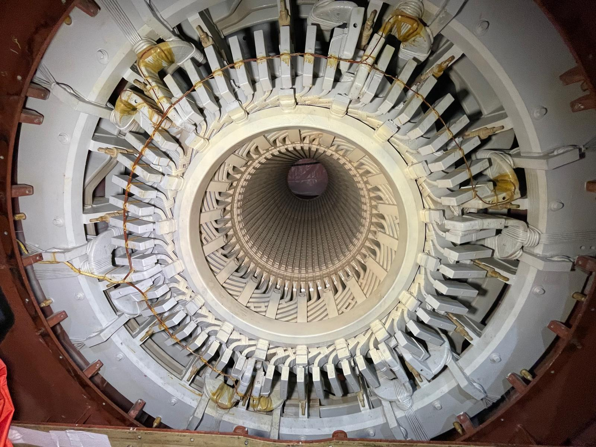

Overview
Deployed as a Field Engineer during Ontario's 2024 Spring Outage Season, supporting the repair, upgrade, and maintenance of gas turbines, steam turbines, and generator systems across five power stations. Operating in a high-pressure, ~90% travel environment, I served as an active member of the execution team alongside senior GE engineers, Technical Field Advisors (TFAs), millwright crews, and generator specialists — contributing to multi-million-dollar outage projects from planning through final return-to-service.
This co-op placement put me inside some of Canada's most critical power generation infrastructure, working directly on the rotating machinery that keeps Ontario's electrical grid running. Every task demanded precision, strict OEM compliance, and a safety-first mindset in one of the most demanding field environments in the industry.

On-site at one of the five Ontario power stations during the 2024 Spring Outage Season
Generator Overhaul & Rewind
A significant portion of the outage work involved large industrial generators — inspecting, testing, and supporting full rewind operations alongside specialist crews. This included assisting with diagnostic testing, stator winding inspection, and the precise re-installation of rewound coils into the generator stator core. The internals of these machines operate under extreme electromagnetic and thermal conditions, and every measurement taken during reassembly directly impacts the reliability of the generator for its next multi-year service cycle.


Generator overhaul — stator interior with rewound coils (left) and rotor assembly staged for inspection (right)

Generator stator bore — freshly coated stator windings viewed from the exciter end during reassembly
Turbine Disassembly & Reassembly
Gas turbine and steam turbine outage work required directing millwright crews through structured disassembly sequences — removing turbine casings, extracting rotors, and staging components for inspection and machining. During reassembly, I supervised all critical clearance measurements to ensure compliance with GE OEM tolerance specifications, documenting every measurement in formal inspection reports submitted to the project record.
Handling turbine rotors — components that can weigh several tonnes and spin at thousands of RPM in service — demanded rigorous foreign material exclusion (FME) controls, precision rigging, and close coordination with millwright and crane crews at every step.

Gas turbine upper casing lift — millwright crew directing overhead crane during disassembly operations


Steam turbine rotors staged for inspection — blade stage geometry and journal surfaces checked against OEM tolerances

Precision Clearance Measurements
During reassembly, every blade-to-casing clearance, journal bearing clearance, and seal gap was measured and recorded. These tolerances are defined in microns — even small deviations from OEM specifications can cause vibration, efficiency losses, or catastrophic failure at operating speed.
All measurements were documented in formal inspection reports and reviewed against GE technical specifications before any component was signed off for re-installation.
Heavy Lifting & Rotor Installation
Turbine rotor installation is one of the most technically demanding and safety-critical operations in a power station outage. The rotor must be lifted, transported, and lowered into the turbine casing with millimetre precision — guided by engineers and millwrights working in tight coordination. I supported these lifts directly, verifying rigging configurations, monitoring clearances during lowering, and communicating with the crane operator throughout.

Turbine rotor installation lift — engineering and millwright crew coordinating overhead crane operation during rotor lowering
The Team
A power station outage runs 24 hours a day, 7 days a week, against a hard return-to-service deadline. The work is only possible through a large, tightly coordinated team — engineers, TFAs, millwrights, welders, riggers, and safety specialists all working in parallel. This outage season gave me deep experience working within that structure: participating in daily planning meetings, coordinating across trades, and understanding how a multi-million-dollar project gets executed under schedule pressure.

The outage crew — engineers, TFAs, millwrights, and field specialists at the end of a successful outage at one of the five stations
HMI & DCS Upgrades
Alongside the mechanical outage work, I collaborated with GE Controls Technical Field Advisors (TFAs) on HMI upgrades using GE Cimplicity and Siemens Energy DCS at multiple power stations. These upgrades involved updating operator display screens, verifying thermocouple and sensor inputs, testing control valve responses, and validating alarm logic — ensuring that when the turbines returned to service, the operators had accurate, reliable real-time visibility of every critical parameter.
The control room setup used multi-monitor workstations running GE Vernova's Cimplicity SCADA platform — displaying everything from individual motor lead/lag status and lube oil system schematics to full gas turbine exhaust temperature profiles and live MW output across multiple generation units simultaneously.

Control room workstation — GE Cimplicity SCADA across four monitors showing motor status, auxiliary systems, and network diagnostics during post-upgrade verification


DCS screens — steam turbine lube oil system schematic with live sensor readings (left) and three-unit gas turbine overview showing GT11, GT12, GT13 operating parameters (right)

What the HMI Upgrades Delivered
The upgraded HMI screens gave plant operators a complete, real-time picture of every turbine and auxiliary system — from individual thermocouple readings at each exhaust port to hydrogen purity inside the generator casing, lube oil pressure across all bearing journals, and MW output with load setpoint control.
Alarm systems were validated to ensure all fault conditions — high vibration, abnormal exhaust spreads, lube oil low pressure — were correctly configured and would alert operators before a minor issue escalated into a forced outage.
Full Scope of Work
- Led crews during turbine disassembly — provided technical direction to millwright crews following GE OEM procedures across gas and steam turbine units
- Supervised all clearance measurements during turbine reassembly — verified blade, bearing, and seal clearances against OEM tolerance specifications and documented results in inspection reports
- Supported generator rewind operations — assisted specialist crews with stator winding inspection, coil installation, and diagnostic testing
- Collaborated with Controls TFAs on HMI upgrades using GE Cimplicity and Siemens Energy DCS — updated operator screens, verified thermocouple inputs, tested control valve responses, and validated alarm logic across gas turbine and steam turbine units
- Prepared field measurement reports and machining drawings verifying OEM dimensional standards across all five sites
- Coordinated heavy lifting operations — verified rigging configurations and guided rotor and casing lifts with overhead crane crews
- Participated actively in internal and external planning meetings — helped build outage project plans, coordinated manpower, and ensured tools and parts were on-site on time
- Maintained rigorous safety leadership — enforced LOTO procedures, confined space entry protocols, PPE compliance, FME controls, and daily safety briefings at every station
- Contributed to multi-million-dollar project scheduling and vendor coordination to keep outages on-track against hard return-to-service deadlines
Results & Impact
Contributed to the successful, on-schedule completion of multi-million-dollar outage projects across five Ontario power stations. All turbine reassembly measurements were accepted against OEM specifications with no rework required — a direct result of careful procedure adherence and documentation. HMI and DCS upgrades enhanced monitoring, reliability, and operator visibility across all facilities returned to service.
This placement provided an exceptional depth of hands-on experience in Canada's most demanding field engineering environment — working with complex rotating machinery, large-scale project execution, and safety-critical operations that few engineers encounter this early in their careers.